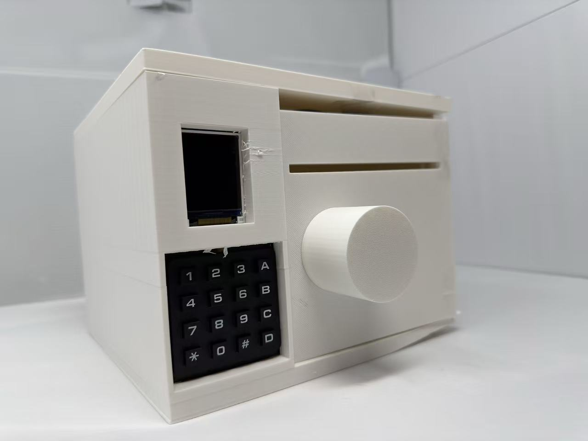
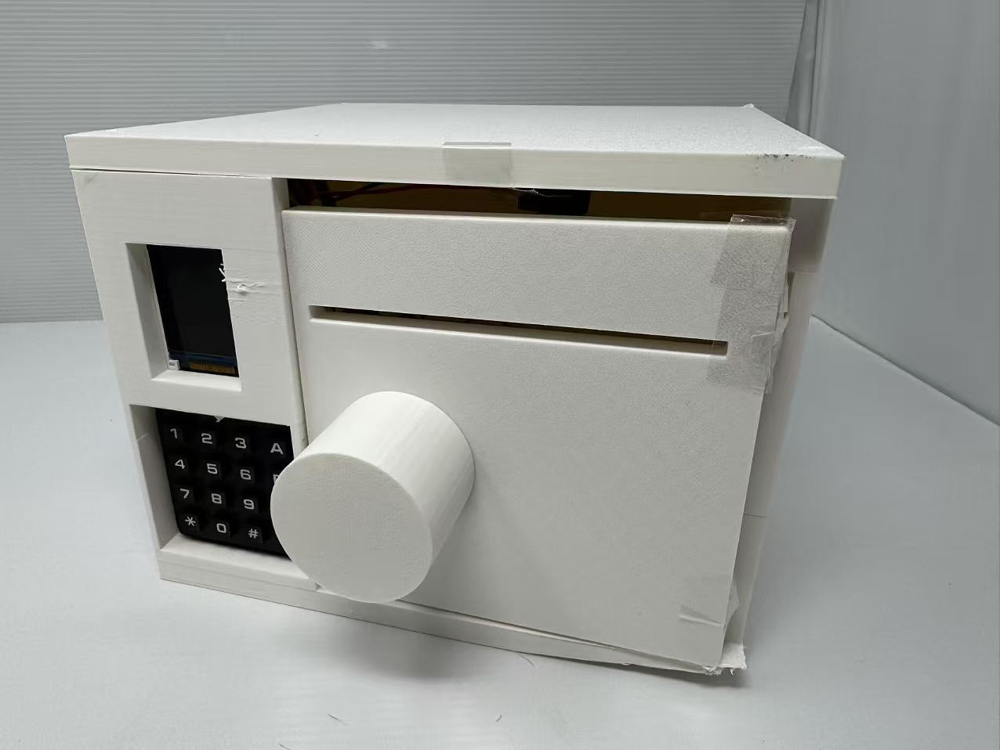
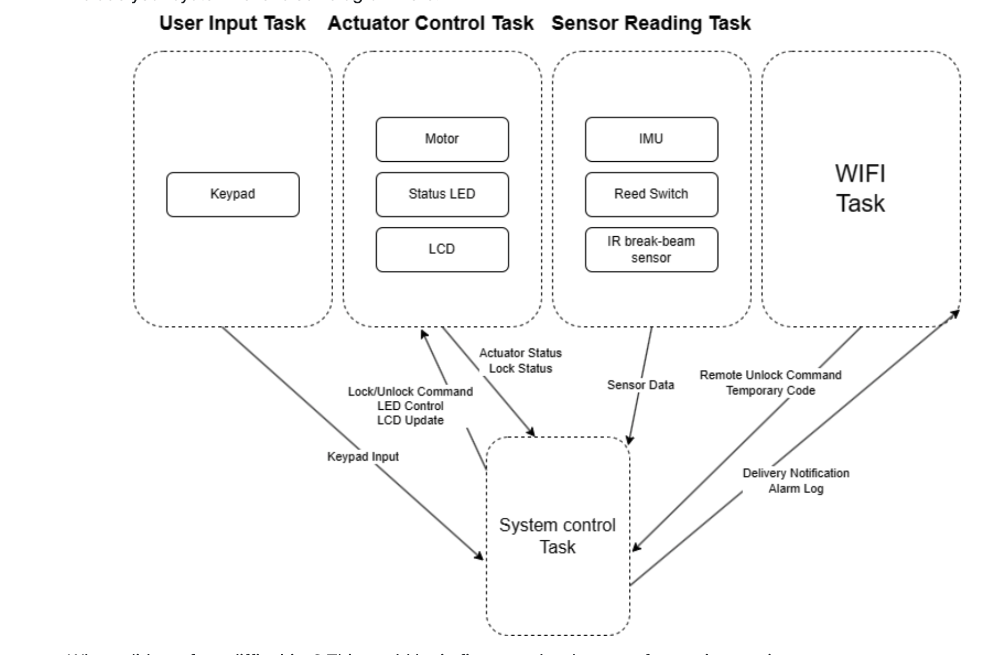
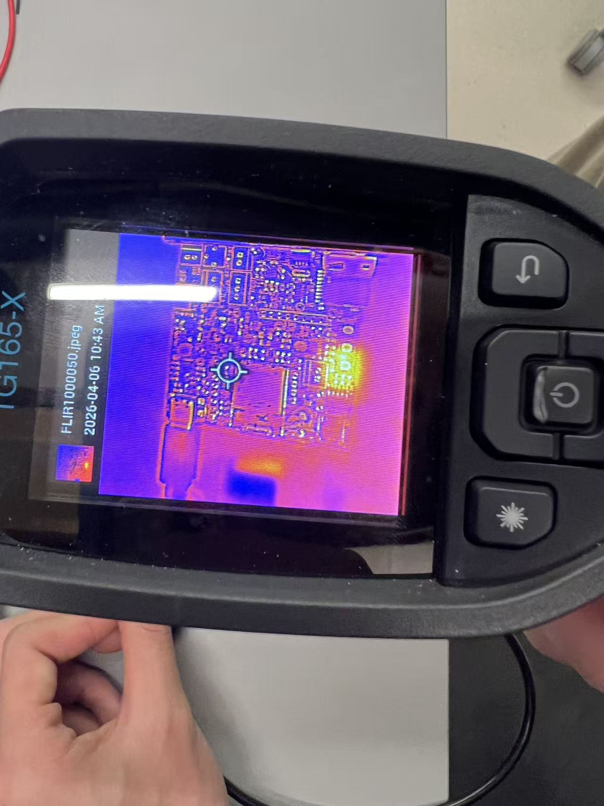
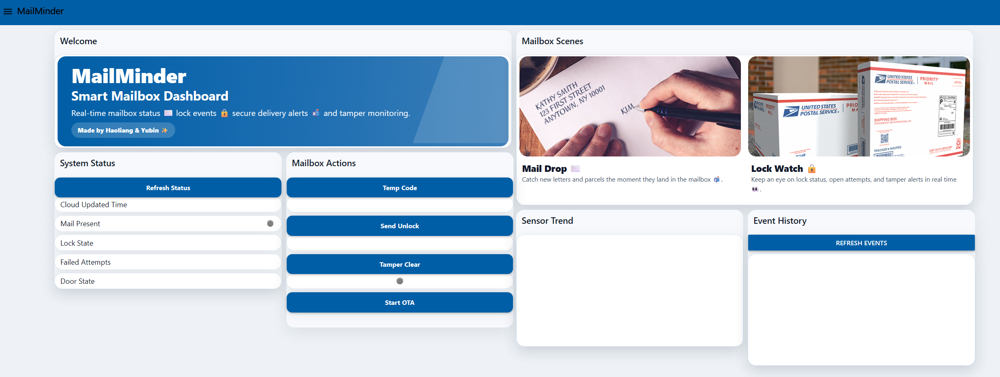
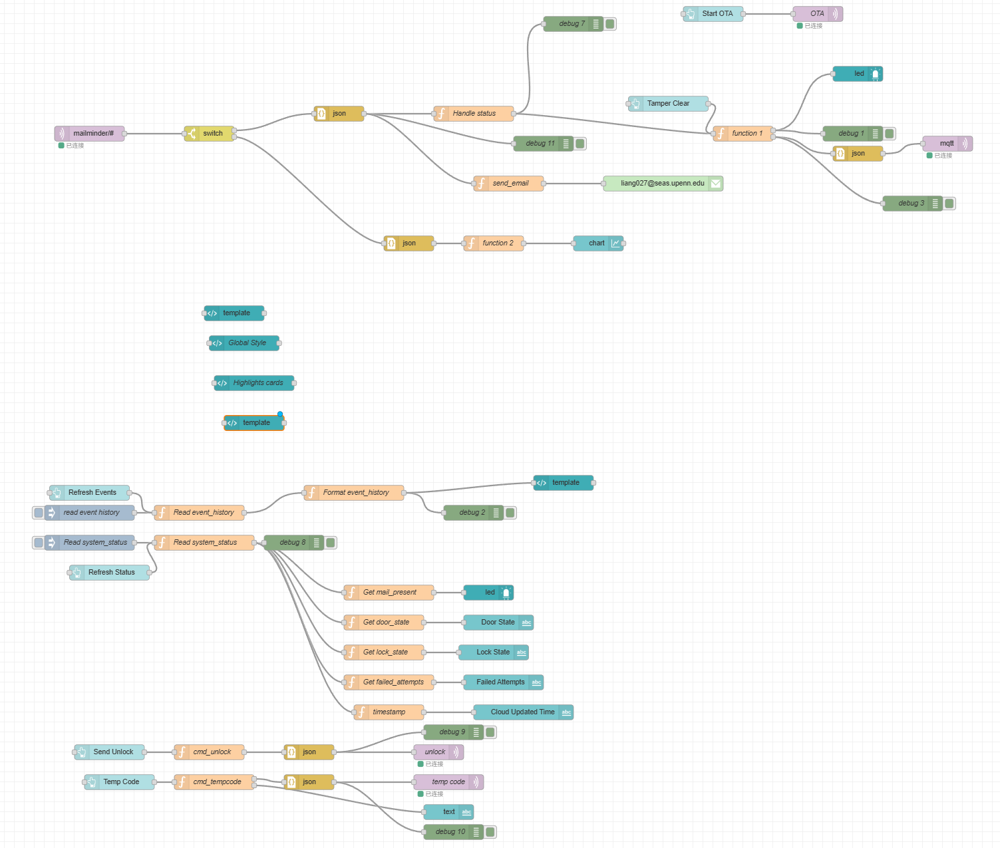
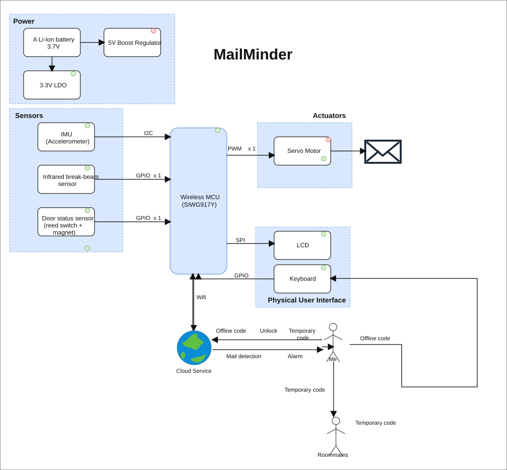
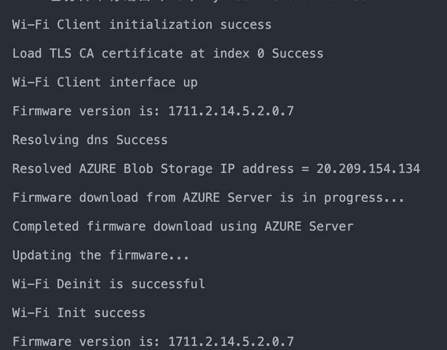

Transport
MQTT / TLS
Mailbox events ship over an authenticated TLS link; commands return on the same channel — no polling, no plaintext.
Portfolio case study · Embedded systems · Spring 2026
I built MailMinder as an end-to-end embedded portfolio project on the SiLabs SiWG917: a 4-layer custom PCB, 3D-printed mailbox enclosure, FreeRTOS application, secure MQTT-over-TLS telemetry, Node-RED dashboard, remote unlock, temporary PINs, and HTTP OTAF firmware updates.

Selected project — MailMinder


Transport
Mailbox events ship over an authenticated TLS link; commands return on the same channel — no polling, no plaintext.
Update path
A dedicated OTA task accepts a cloud command, downloads firmware from Azure Blob, and resets after the M4 application update completes.
Runtime
Sensor, keypad, actuator, LCD/system control, MQTT, and OTA tasks — coordinated by queues, a status mutex, and explicit event handoff.
1. Video presentation
Team 04, MailMinder — Haoliang Xie and Yubin Guan. The demo is structured around the grading checklist: full device integration, mechanical packaging, sensor data to Node-RED, dashboard-controlled actuator actions, and OTA firmware update.
Embedded demo video
This short demo presents the full MailMinder system: the integrated mailbox prototype, mechanical packaging, sensor telemetry on Node-RED, dashboard-controlled actuator actions, and the OTA firmware update path.
If the embedded player is blocked by browser permissions, open the same video in a new tab.
Open video in Drive2. Project summary
MailMinder is a smart mailbox built around the SiLabs SiWG917, a 4-layer custom PCBA, FreeRTOS firmware, and a Node-RED cloud dashboard. It detects mail delivery, monitors door and tamper state, supports local keypad unlock, and accepts remote commands for unlock, temporary pickup codes, tamper clear, and OTA firmware update.
The project came from a simple apartment-mail problem: mailboxes usually do not tell you when important letters arrive, so checking them becomes manual, forgettable, and easy to miss.
MQTT over TLS turns the mailbox into a two-way IoT device: it publishes delivery, door, lock, tamper, and status events, while Node-RED sends secure remote actions.
The device uses an IR break-beam for mail-slot events, a reed switch for door state, an IMU for tamper detection, a 4x4 keypad and TFT LCD for local interaction, and a servo lock as the actuator. A FreeRTOS task split separates sensing, keypad input, actuation/display, state control, MQTT, and OTA so each timing domain stays isolated.

The hardest issues were pin multiplexing and integration: LCD MOSI moved to GPIO57, the IR input moved from GPIO50 to GPIO8 with a 4.7k pull-up, keypad columns needed 18k pulldowns, PWM moved to ULP_GPIO5, and the network stack needed reconnection handling in a dedicated task.
We learned that pin planning, bring-up test points, and mechanical packaging have to be co-designed early. The FSR idea was removed after testing because letter loads were too distributed for reliable detection on the small sensor area.
Improve the door hinge and enclosure tolerances, make keypad scanning more efficient, harden long-runtime MQTT recovery, and explore differential OTA updates to reduce firmware update time.
The project connected PCB design, driver bring-up, FreeRTOS tasking, secure networking, OTA, and product-level demo discipline into one complete prototype.
3. Hardware & software requirements
The table below reviews the original requirements honestly. Some requirements were met as written, while others were changed after testing revealed a better or more practical design.
| ID | Status | Validation / result |
|---|---|---|
| HRS-01 | Changed | FSR was removed after load testing because letters distributed weight over a larger area than the FSR could reliably sense. |
| HRS-02 | Met | Reed switch detected open / closed door state at the target closed-position gap. |
| HRS-03 | Met | IMU provided 3-axis acceleration data for tamper and disturbance monitoring. |
| HRS-04 | Met | Servo moved between locked and unlocked mechanical positions with at least 60 degrees of travel. |
| HRS-05 | Changed | Audible / LED annunciator was not used in the final device; status is shown on LCD, dashboard, and notifications. |
| HRS-06 | Met | The hardware shall include an MCU capable of interfacing with required peripherals through I2C, SPI, PWM, and GPIO. We tested it and confirmed that the MCU supported all required peripheral interfaces. |
| HRS-07 | Met | The device shall include a power architecture capable of operating from a 3.7 V rechargeable Li-ion battery and accepting external USB power for charging and system operation. We tested it and confirmed that the device could operate from the battery and accept USB power as intended. |
| HRS-08 | Met | The power architecture shall provide a regulated 5 V rail and a regulated 3.3 V rail for the actuator, MCU, sensors, and display modules. We tested it and confirmed that both power rails operated as required. |
| SRS-01 | Met | IR break-beam insertion events were detected within the required response window. |
| SRS-02 | Changed | FSR confirmation was removed; the final system marks mail present from the IR insertion path and cloud state update. |
| SRS-03 | Met | Delivery events publish to the cloud over MQTT/TLS when Wi-Fi is available. |
| SRS-04 | Met | Valid local keypad PIN actuates the servo unlock path without requiring cloud connectivity. |
| SRS-05 | Met | Authenticated Node-RED remote unlock command actuates the servo over the MQTT command path. |
| SRS-06 | Changed | Instead of a 30-second keypad lockout, three failed PIN attempts trigger a cloud / email notification and failed-attempt reporting. |
| SRS-07 | Met | Local LCD updates mail, lock, door, network, and attempt/status information during operation. |
| SRS-08 | Met | Door open / close changes publish to Node-RED within the Wi-Fi command / telemetry path. |
| SRS-09 | Met | Lock and unlock state changes are published to the cloud when the servo state changes. |
| SRS-10 | Met | IMU-based tamper events are reported to Node-RED through MQTT telemetry. |
| SRS-11 | Met | Periodic status includes mail presence, door state, lock state, network state, and failed-attempt information. |
| SRS-12 | Met | Temporary pickup codes can be sent from Node-RED and stored for keypad-based unlock. |
4. Project photos & screenshots
Required project evidence: final prototype photos, standalone PCBA top and bottom, thermal image under load, Altium 2D / 3D views, Node-RED dashboard and backend, and the updated system block diagram.







Sense. Decide. Act.
It has to sense a parcel without false-triggering on a draft. It has to decide whether a door movement is a delivery or a break-in. It has to act on a remote unlock within seconds — even when the Wi-Fi just dropped. MailMinder treats each of those as a separate concern, each owned by a single FreeRTOS task, each communicating only through queues and a shared status structure protected by a mutex.
Build story
Define the smart-mailbox behavior, choose the sensing stack, actuator, display, keypad, power path, and SiWG917 platform.
Partition the design into power, SiWG917, sensor, display, keypad, and servo interfaces before committing to copper.
Route the 4-layer board, keep RF and switching-power regions clean, and place headers for bench debug and enclosure wiring.
Validate rails, boost behavior, headers, test wiring, and first peripheral signals on the populated custom PCBA.
Write and verify drivers for the IR break-beam, IMU, reed switch, keypad matrix, TFT display, and servo lock.
Split sensing, input, actuation, display, MQTT, and OTA into owned FreeRTOS tasks with queues and mutex-protected state.
Publish mailbox state over MQTT/TLS, build the Node-RED dashboard, and add cloud-triggered HTTP OTAF updates.
Design the printed mailbox body and door, then package the PCB, keypad, display, battery, wiring, and servo into the enclosure.
Schematics & layout
The design is partitioned for clarity: a top-level sheet for power and peripheral hookups, and a dedicated SiWG917Y sheet for the MCU itself. The board layout keeps the RF section clear, fans out sensor I/O on the south edge, and routes actuator drive on the east edge.


Hardware
The MailMinder 4-layer PCBA carries the SiWG917 wireless MCU, a USB-C power inlet, an SD-card slot for local storage experiments, and connectors for every peripheral the firmware drives: IR break-beam, IMU, magnetic switch, keypad, LCD, and servo. Boards were brought up from bare copper to bench-tested integration in three weeks.


Bench wiring
The integration plan started as a task-level block diagram, then became a traceable bench harness: keypad input, actuator control, sensor reading, Wi-Fi messaging, and system control were validated together before the enclosure build.

Power bring-up
Before sensor or cloud integration, the power path was treated as its own subsystem. We isolated the boost section from the rest of the board, removed test-pad shorts where needed, soldered direct measurement leads, then used a bench supply, electronic load, oscilloscope, and thermal camera to prove startup, discharge, load regulation, and hot spots.


01
Four peripherals, each chosen for one job: an IR break-beam across the mail slot for insertion detection within 50 ms, a 3-axis IMU for tamper, a magnetic switch on the door (≤ 10 mm gap), and a servo with ≥ 60° travel for the lock.
02
The system-control task is the only place state changes. Sensor, keypad, and
Wi-Fi tasks publish events into a control queue; the control task
publishes commands into an actuator queue and a cloud queue. A small
shared status struct — mail_present, door_state,
lock_state, network_state, failed_attempts
— sits behind a mutex and feeds the local display at ≥ 2 Hz.
03
Topics are split by direction. The mailbox publishes
delivery, tamper, door_state,
lock_state, failed_attempts, and periodic
status. The cloud publishes cmd_unlock and
cmd_tempcode. Node-RED renders the live state, archives history,
and exposes a one-tap remote unlock.
Software architecture
The current codebase is organized around a state-machine and event-bus model:
hardware-facing drivers live under drivers/*, while app/core
owns task creation, shared state, MQTT command parsing, cloud publishing, and OTA.
Across the application and custom drivers, the project carries roughly 4.7k lines of
MailMinder-specific C.
RTOS
sensor_task, user_input_task, actuator_task,
system_control_task, mqtt_task, and ota_task
each own one timing domain. Shared state is protected by g_state_mutex,
while g_cloud_event_queue, g_actuator_queue, and
g_ota_queue keep work decoupled.
MQTT
The SiWG917 connects to the broker over TLS 1.2 on port 8883. It publishes status,
delivery, door, tamper, lock, failed-attempt, and IMU acceleration topics, while
subscribing to cmd_unlock, cmd_tempcode,
cmd_clear_tamper, and cmd_ota.
STATE
The firmware derives mailbox state from IR, reed, and IMU inputs, then latches tamper until a clear command arrives. Temporary codes use a 64-bit timebase for expiry, and cloud unlocks are paired with automatic re-lock behavior.
Cloud evidence

cmd_ota, which wakes the firmware
OTA task and starts the HTTP OTAF update path on the SiWG917.
Mechanical integration
After the electrical and cloud path worked, the design moved into MCAD packaging: a printed enclosure body plus a front mailbox door. The door carries the mail slot and rotating lock geometry, while the body manages the keypad, LCD, PCBA, servo, battery, and cable routing.


5. Codebase & project links
These are the required review links: final firmware code, Node-RED instance and flow, Altium 365 PCBA share, and the public GitHub Pages submission.
Final SiWG917 FreeRTOS application code, including task orchestration, MQTT, OTA, and application state.
Open firmware codeAzure-hosted dashboard for live status, event history, temp code, unlock, tamper clear, and OTA commands.
Open dashboardBackend flow with MQTT routing, dashboard widgets, email notification, command publishing, and chart/event handling.
Open flow editorFinal board design share link for schematic, layout, 2D/3D review, and manufacturing-file archival.
Open Altium designThe public site collects the project narrative, validation evidence, photos, dashboard screenshots, hardware links, and firmware / Node-RED code references in one place.
Resume fit
Firmware · Drivers · System integration
Brought up the peripheral drivers on the SiWG917 — IR / IMU / magnetic / servo / keypad — and shaped the FreeRTOS task split that keeps every subsystem on its own clock. This project demonstrates low-level debugging, RTOS design, hardware/software integration, and practical product thinking.
Cloud · MQTT-TLS · Node-RED · OTA
Owned the network side — the MQTT topic schema, the TLS-secured broker link, the Node-RED dashboard, and the command paths for remote unlock, temporary codes, clear-tamper, and OTA.